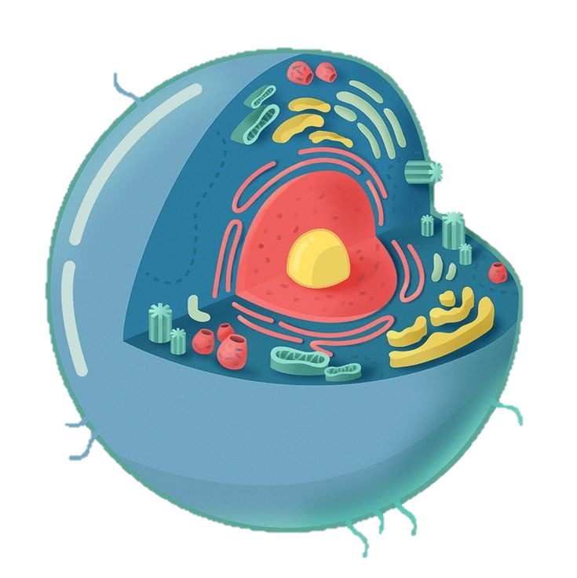

CELULAS EUCARIOTAS
A célula eucariótica possui núcleo e organelas membranosas.
Clique aqui para ver células animais e vegetais.
As células eucarióticas são células encontradas nos seres vivos do Domínio Eukarya, como protozoários, animais e plantas. Essas células destacam-se pela presença de um núcleo verdadeiro, ou seja, a região onde o material genético encontra-se é delimitado por membrana, a membrana nuclear ou carioteca, por essa razão o termo eucariótico vem do grego eu, que significa verdadeiro, e karyon, que significa núcleo
Nas células eucarióticas observa-se uma grande variedade de organelas membranosas, sendo possível verificar a presença de estruturas, como complexo golgiense, mitocôndrias, cloroplastos (célula vegetal) e outras estruturas ausentes em células procarióticas. Os ribossomos, assim como nas células bacterianas, aparecem nas células eucarióticas, entretanto, esses são maiores e apresentam diferenças em sua composição.
Saiba mais sobre em: mundoeducacao.uol.com.br

CELULAS ANIMAIS E VEGETAIS
As células animais e vegetais são do tipo eucarionte, sendo assim, podemos dizer que elas são compostas de membrana, citoplasma e núcleo. A membrana plasmática é a estrutura que reveste a célula, controlando o que entra e sai dessas estruturas. O citoplasma é a região entre a membrana e o núcleo onde estão localizadas as organelas celulares, que se diferenciam nos dois tipos celulares. Por fim, o núcleo é a região em que estão armazenadas as informações genéticas de cada ser vivo.